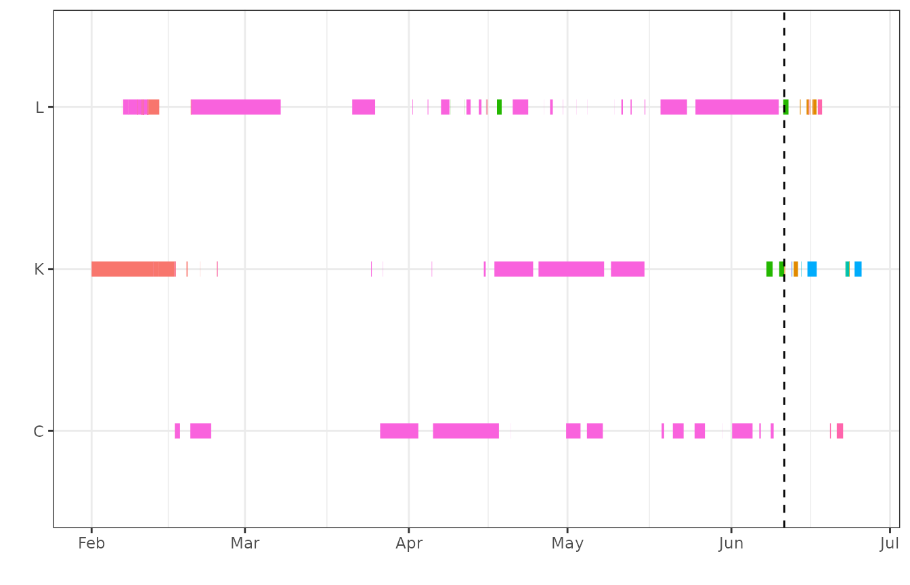
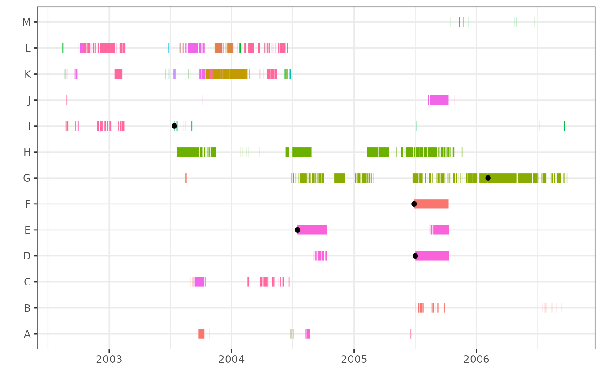
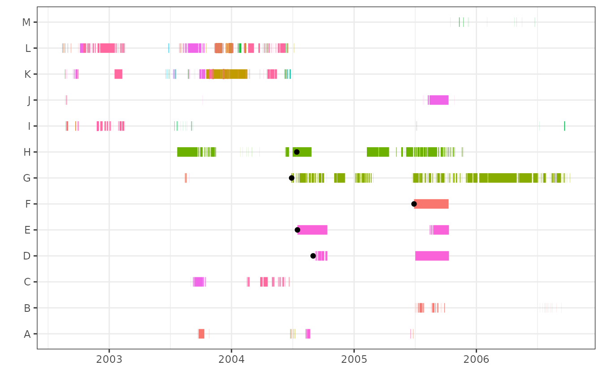
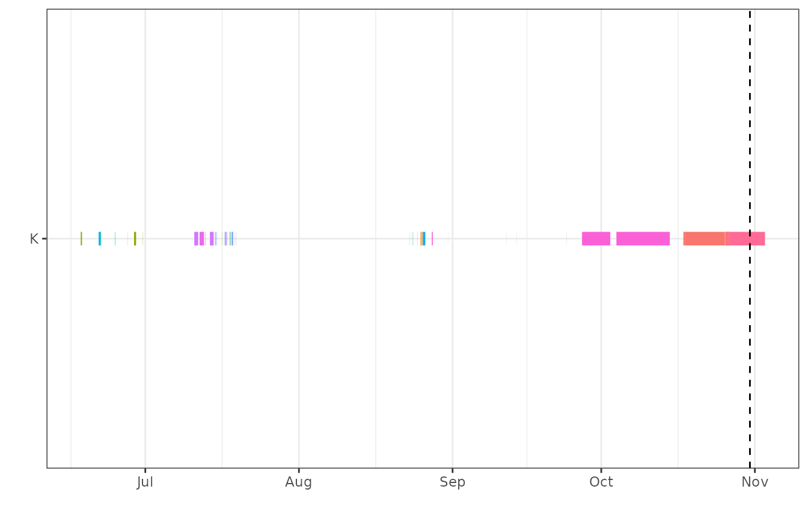
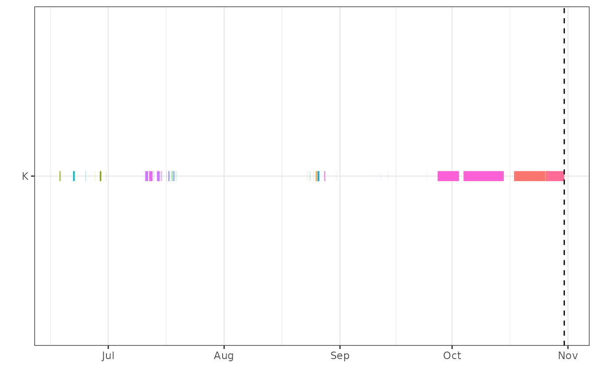

Some species may exhibit seasonal patterns in movement. For example, in the plot below, there is reduced movement during the ice-covered season (before the dashed line), with associated long residence events. In summer (after the dashed line), when movement activity increases, residence events may also increase in number and frequency.

If this is the case, the long residence events will likely increase
thresholds for morts(). Animals that do not move during the
summer months, and are likely mortalities, may then not exceed the
threshold. For this reason, there is the option to define seasons or
periods of interest in morts(). If seasonality is applied,
then both thresholds and mortalities are identified only using data or
residence events from the specified periods.
To apply seasonality, the arguments season.start and
season.end must be specified. There are two ways that the
start and end can be specified. If the study takes place over multiple
years and the season or period of interest is the same in all years,
start and end can be specified as a day and month using a character
string in format dd-mm.
day_month<-morts(data=events,type="mort",ID="ID",station="Station.Name",
season.start="01-06", season.end="31-10")Alternatively, if there are multiple periods of interest within a year, and/or the periods change from year to year, start and end can be specified. Start and end can be specified either as POSIXt date and times, or as character strings in the format YYYY-mm-dd HH:MM:SS.
full_date<-morts(data=events,type="mort",ID="ID",station="Station.Name",
season.start=c("2003-06-01","2004-06-05"),
season.end=c("2003-10-31","2004-10-15"))Here is how mortalities would be identified, using
method="all" and no seasonality. The black points indicate
the time of a potential mortality.

And here is when seasonality is included:

Note that animal I is not flagged as a potential mortality when
seasonality is applied. However, animal I would likely be flagged if the
infrequent() function was used in addition to
morts().
overlap argument
There is an optional argument when applying seasonality. The
overlap argument specifies whether residence events that
overlap (i.e., start before and end after) the season start or end are
included in full, or if the overlapping residence events are truncated
at the specified start and/or end. The default is
overlap=TRUE, which keeps the full residence events, as in
the examples above. To truncate the residence events, use
overlap=FALSE.
no_overlap<-morts(data=events,type="mort",ID="ID",station="Station.Name",
season.start="2003-06-01", season.end="2003-10-31",
season.overlap=FALSE)Here is an example of residence events with overlap
(overlap=TRUE):

Here is an example of residence events without overlap
(overlap=FALSE):

season() function
If you are interested in exploring residence events after applying
seasonality, the season() function, which is called by
morts(), is also available as a standalone function. The
arguments for season() are the same as those for the other
functions.
season.data<-season(data=events,type="mort",ID="ID",station="Station.Name",
season.start="2003-06-01", season.end="2003-10-31")